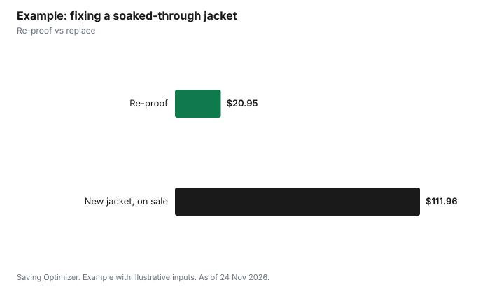

Clothing · Canada
Rain Jackets on a Budget: Waterproof Ratings and Re-Proofing

For city commuting and everyday rain, a budget jacket rated 5,000 to 10,000 mm with taped seams is usually enough. Pricier jackets matter more for long hikes in heavy rain. When your old jacket starts soaking through, wash it and re-proof it first: a $20.95 bottle of wash-in waterproofer at MEC often brings it back.
Key takeaways
- 5,000 to 10,000 mm: everyday rain; 10,000 to 15,000 mm: moderate rain and regular outdoor use.
- Seams, zips and the outer water-repellent finish matter as much as the number.
- Nikwax TX.Direct Wash-In 300 ml: $20.95 at MEC (checked 24 Nov 2026).
- Wash first, then re-proof.
- Re-proofing can't fix a peeling or torn membrane.
Waterproof ratings
| Rating | Protection | Good for |
|---|---|---|
| Under 5,000 mm | Limited | Brief showers |
| 5,000 to 10,000 mm | Light to moderate | Everyday rain, short outings |
| 10,000 to 15,000 mm | Good | Day hikes, moderate rain |
| 15,000 to 20,000 mm | High | Long wet days |
| Over 20,000 mm | Very high | Severe weather |
Re-proofing an old jacket
- Wash it with a technical cleaner, not regular detergent.
- Check if water beads again; sometimes cleaning is enough.
- If not, use a wash-in or spray-on waterproofer.
- Follow the label for drying.
- Replace the jacket only if the inside is peeling or torn.

Re-proof or replace: an example
Example: re-proofing your jacket costs $20.95. A new MEC Aquanator women's jacket was $139.95 before its sale price of $111.96. If the membrane is fine, re-proofing saves about $90 or more.
See winter coat cost per wear and base layers.
Sources
- Nikwax, Waterproof ratings explained (1 Aug 2025), checked 24 Nov 2026.
- MEC, Nikwax TX.Direct Wash-In Waterproofer 300 ml and rain jacket deals, checked 24 Nov 2026.
Frequently asked questions
What waterproof rating do I need?
For everyday rain, 5,000 to 10,000 mm is usually enough. Go higher for long, wet outings.
Why is my rain jacket soaking through?
Often the outer finish is dirty or worn. Wash it, then re-proof it.
How much does re-proofing cost?
MEC listed Nikwax TX.Direct Wash-In 300 ml at $20.95 when checked on 24 Nov 2026.
Can I wash a rain jacket with regular detergent?
It's better to use a technical cleaner; regular detergent can leave residue.
When should I replace a rain jacket?
When the inside membrane peels, cracks or tears.
Researched and drafted with AI assistance and fact-checked against official Canadian sources. How we create content.
Note: Prices change. Savings are examples. Education only.